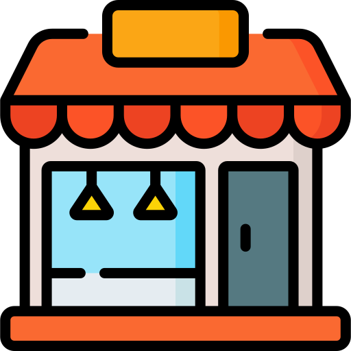
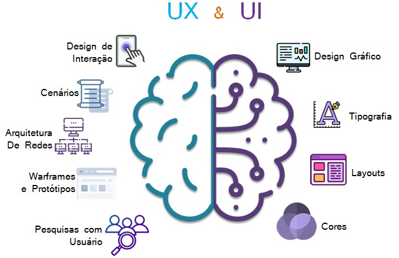

Tudo o que você precisa
saber sobre UI/UX

Nos últimos tempos, tem se tornado comum a confusão entre os termos User Interface (ou UI) e User Experience (ou UX). Designers e desenvolvedores front-end sofrem muito com essa confusão. De acordo com o TreinaWeb, eles recebem muitas perguntas dos alunos e, apesar de serem conceitos intimamente relacionados (o que ajuda na confusão entre estes dois pontos), UI e UX na verdade são coisas conceitualmente bem diferentes.

O fundador da "UX Collective" Fabrício Teixeira, disse uma vez: “Imagine que você está com fome e, ao invés de cozinhar, você prefere sair para jantar. Como escolher o restaurante certo? Bom, você pergunta para alguns amigos para recomendarem um bom Sushi. Então seus amigos mandam a recomendação deles e logo você chega até o site do tal restaurante. Parece legal. Você checa o cardápio do restaurante no próprio site e liga para eles para reservar a mesa.
Que voz amigável do outro lado da linha! Depois de dois minutos você consegue reservar a mesa mais bem localizada do lugar, com uma vista ótima do terraço. Foi tudo rápido e o cara do outro lado da linha fez você sorrir com seu charmoso sotaque japonês. Parece que eles realmente celebram uma cultura tradicional de culinária japonesa lá.
Você chega no restaurante na hora certa. Você vê o logo de longe, brilhando na parede, que te guia até a entrada principal — então você pega o elevador até o terraço. O interior é fantástico, uma mistura de elementos tradicionais com decoração moderna. Você imediatamente começa a pensar que a comida deve ser excelente ali. O cara não prometeu muito no telefone, e a vista da sua mesa é melhor do que você imaginava. Você olha as opções no cardápio, perfeitamente organizadas em um papel natural de boa qualidade e com uma tipografia moderna e de fácil leitura. Você pede um dos três pratos principais que parecem ser apetitosos. Eles te servem sushi fresco em pratos grandes e brancos com decorações de muito bom gosto em volta da comida. Sem mencionar que você é servido no timing perfeito entre um prato e outro.
Quando você termina o prato principal, o chef surpreende os convidados com uma pequena sobremesa. O final perfeito para o horário do jantar, que pareceu passar voando. Você pede a conta, que é entregue a você em um pequeno envelope feito com o mesmo papel do cardápio. Gorjeta? Claro! Foi um ótimo jantar. Cada parte combinando perfeitamente com a outra, como peças de um mesmo quebra-cabeça que, no final, formam uma bela imagem. Você certamente recomendará esse lugar para seus amigos. E uma coisa é certa: esse foi somente o primeiro jantar de muitos. Na saída é que você percebe o pianista que estava no canto do restaurante tocando aquelas sutis canções de jazz durante a noite toda. Isso é uma boa experiência do usuário.”
Tanto em User Experience (UX) quanto User Interface (UI), a excelente experiência do usuário é o essencial. A sigla UI significa User Interface, que nada mais é do que a interface do usuário, neste caso cria-se a ideia de algo bem objetivo e controlável. o UI designer é responsável por criar e desenvolver os elementos gráficos da interface de usuário. A sigla UX significa User Experience, justamente “experiência do usuário”. O profissional de UX busca entender o que qualifica ou prejudica a relação do usuário com o produto e serviço em questão.

Existem diversas possibilidades na área, pois esse mercado está em crescimento. Vagas em empresas de tecnologia e startups não estão em falta. Portanto um UX designer pode trabalhar na área de design, desenvolvendo peças gráficas para agências e empresas, criando marcas, planejando e desenvolvendo layouts de sites e muitas outras atividades.
No cargo de UX / UI Designer se inicia ganhando R$ 3.012,00 de salário e pode chegar a ganhar até R$ 6.169,00. No Brasil a média salarial para UX / UI Designer é de R$ 4.532,00.
Não é necessário a formação em um curso superior específico para atuar como UX Designer. Porém, os profissionais com graduação e pós-graduação nas áreas de Design e Tecnologia geralmente são vistos com outros olhos do mercado de trabalho. A formação mais comum é de Graduação em Design Gráfico.
Para ser um bom UX/UI designer precisa-se de boa comunicação, empatia, saber pesquisar, trabalhar em equipe, manter-se atualizado, ser curioso, além dos softwares de design como Figma, AdobeXD, Framer entre outros.